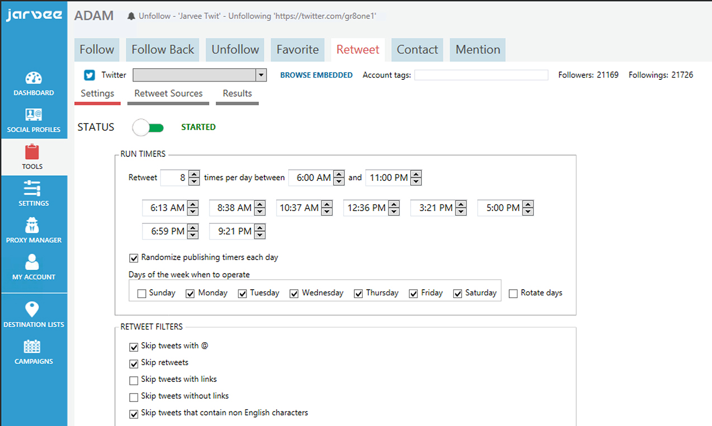

Did you know that you can increase your social following without using ads? You can even have better results if you know the exact strategies to apply to your content marketing.
Here are 5 of the best strategies which work around what you have already been doing. Some are suggestions, but we also encourage you to take bolder steps to reach your goal.
#1 Make your content better
The best way to increase your social following sans ads is publishing more interesting/useful content. There is no way around this one. Offer something valuable to those who come across your social accounts and website. What you deliver depends on the brand of your business. When people become enriched with your content, they are most likely to share their online experience with you.
Cater to the curiosity and emotions of your market to increase your social following. They want to feel connected with you, relate with what you post. They may even want to be you. With this, ensure that you evoke a deeper aspect of each individual.
The value that you offer comes in various forms. This goes the same for the benefits as well. Increasing your social following greatly considers what they want, not just what you want for them.
You can use social media metrics to learn more about your target market. These are statistics marketers base their actions on. Jay Baer is a social media marketing expert who categorizes metrics into 4. Consumption metrics, sharing metrics, lead-gen metrics, and sales metrics are what you need to keep your eyes on.
Make the improvements relative to the online platform you use. Improve your boards and interact with communities in Pinterest. Create more inspiring images for your Instagram account and improve your CTAs in your tweets.
Improving your content also does wonders for your brand. The way you consistently carry out your identity to meet your market’s needs shows your dedication in your brand. This increases your social following as it encourages more interactions with your business in the long run.
#2 Tagging
Another fundamental action to increase your social following is getting your content shared. For those who have been in the industry for a while, you may be able to see what type of content gets a lot of shares. You can apply the principle behind that in your future posts. For those who are still establishing their online presence, it can be more challenging.
Starters have followers who they know and know them pretty well. Tag them in posts which might be of interest. If you know people who are looking for something in particular, you can tag them in your related post as well. Tagging the accounts of other users applies to most of the social media platforms.
Using hashtags is also a way to increase your social following without using ads. Twitter started this global trend back in 2009. It is now undeniably well-known and frequently used in other social media platforms as well.
You can use hashtags generally related in your industry. You will become visible in searches made by, most likely, your target audience. You can also create hashtags uniquely related to your brand. This helps establish your brand identity among those in the industry.
Unique hashtags help increase your social following because these are directly associated with your brand. You can also use hashtags for promotions of events to make people more interested. It becomes a tool for you to bring more people to know more about you as well.
#3 Improve customer service
Without ads, you can increase your social following by improving your customer service. This service encompasses before, during, and after availing what you have to offer. The success of this endeavor lies on your entire team.

The interactions of the members of your team with your followers reflects your brand. They should be able to adjust themselves to the personality and concern of each follower. You should be able to keep and make your followers happy and satisfied.
Let’s assume that not all your customers are your followers. You can increase your social following by making each customer your follower by showing that you can communicate with them easier and faster through your social media accounts and web page. Offer exclusives in your online accounts to make them visit your accounts more often as well.
In a survey conducted by JD Power, 67% of their respondents said they contacted a business via social media for support. This goes to show how vital your online presence is for your brand and to increase your social following as well. A Bain and Company study in 2011 suggests that companies who are engaging and are responsive to customer service requests over social media end up spending 20-40% more with the company. After 5 years, the importance of online customer service stays the same.
Think of after-sales interactions, whether positive or negative, as an opportunity for you to increase your social following. If they had a great encounter, they are proud enough to share it. Their investment in trusting your brand paid off. If they had negative feedback and you were able to address it appropriately, they would be happy to share the good customer service they received.
Negative customer experience is more challenging to take on compared with good experiences. The most common you might encounter is negative comments on social media. It’s better to respond to it proactively as soon as possible.
#4 Update your social media accounts on a regular basis
Be conscious of the frequency of your social media presence to increase your social following without using ads. You need to get and keep your engagement rates high. This is possible by posting on a regular basis.
By having a stable social media presence, your existing followers can frequently visit your page or subscribe to notifications for updates. They know they have something to look forward to. As you keep your posts frequently coming with interesting, entertaining, or useful content, more people will be enticed to follow you. They know you deliver quality content of value to them.
There are several pitfalls if you fail to do so. Your avid followers may get frustrated when they do not hear from you in a while. Those who may hear from you just a few times may not remember you anymore.
Remember that your current followers will greatly help you with your goal. You want them to be loyal to your brand. You want to establish a strong connection to give them an enriching experience worth sharing with others. These people they know online and even outside the social media world are your potential followers.
There may be times that you get preoccupied with other important matters. There are also days when you need to relax and unwind. An effective way to maintain your online presence is by scheduling your posts in advance. There are several scheduling tools available online, one of which is JARVEE.

You can schedule posts on all your social media platforms from a single dashboard. This saves you precious time and effort. You are able to set the type of content you want to post at a specified date and time of your convenience.
Scheduling helps you allot more time for other matters relevant to increase your social following. You can check on the engagement rate your posts garner. This will help you improve the content, time, and date of your future posts to get more engagement, therefore, more followers in the long run.
#5 Collaborate
Working together with other brands and influencers can help you increase your social following. You obviously have to team up with those in your industry to put your name on the map. Eventually, you may want to make bold yet exciting moves by working in partnership with those in other industries.
Consider collaborating with a brand with a similar target market. You can team up to tap various audiences. This gets the both of you a bigger exposure for your brand and your offerings. Make sure that your connection with them is strong from start to finish, so look up some of the best ways to connect with them.
Working with an influencer in the industry can be a good endeavor as well. These people have established themselves with much credibility of who they are and what they believe in. When you are able to get one to spread the word about you, you will be gaining the interest of your influencer’s followers (which can be quite a good number seeing their status in the industry).
How do you select the brands and influencers you collaborate with? They should be aligned with your brand’s identity. Consistency goes a long way, including in those who you are affiliated with.
In collaborating outside the industry, make sure that the both of you will garner an advantage at the end of the day. Cross-industry collaborations broaden your reach and increase potential followers. When they see the unlikely yet sensible connection that the collaborators have, the interesting twist will bring about more followers.
Wrapping it up
Let these 5 ways to increase your social following guide you not only to reach your main goal but also improve your brand in general. These will help strengthen relationships you already have. These will also create opportunities for more people to engage with you in the future.
Dominique says
Bookmarked!!! I’m a noob so this will really be a great help 🙂